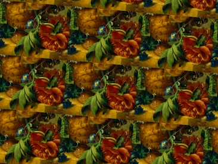
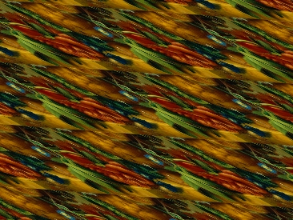

Kernel choice and resampling quality
Notice that in the demonstration of rotation
combined with down-scaling, the "cubic:1,0" kernel was
specified. This is not an interpolating kernel; it blurs. All the
other examples use the default "cubic:0,0.5", an
interpolating kernel called the Catmull-Rom kernel. Here are the
available kernels:
- "box": box filter (basically nearest neighbor)
- "tent": bilinear interpolation
- "cubic:1,0": maximally-blurring cubic kernel
- "cubic:0,0.5": most accurate interpolating cubic ("Catmull-Rom")
- "cubic:B,C": B,C Mitchell/Netravali family of cubics
- "quartic:0.0834": good C2 interpolating quartic
- "gauss:<sig>,<cut>": Gaussian kernel, with standard
deviation of sig, and cut-off at cut standard deviations.
ilk is not very good about properly handling downsampling.
Ideally, the kernel would eliminate the frequencies higher than the
Nyquist rate associated with the new, lower sampling rate.
Intelligent scaling of the resampling kernel is done by unu resample, but
ilk does not do this. Its up to you do choose an amount of
blurring associated with the new sampling rate. All the kernels can
take an extra argument which precedes all the others, which gives a
stretch factor: 1 = interpolation, 2 = stretched out by a factor of
two, and half as tall.
echo "-i init.ppm -b wrap -t scale:0.33,0.33 rotate:5" > kdemo.txt
ilk @kdemo.txt -k cubic:0,0.5 | tojpg > k1.jpg
ilk @kdemo.txt -k cubic:3,0,0.5 | tojpg > k2.jpg

Looking at the thin plant stems and other small features in the upper
image, aliasing is visible; each copy of a small feature looks
different. In the lower one, this is not so much the case.
However, you can't (currently) control the kernel width with
ilk in a directionally varying manner, as would be necessary
to properly sample this:
ilk @kdemo.txt shear:0,2 -k cubic:3,0,0.5 | tojpg > k3.jpg

Do not be tempted to use ilk as a tool for doing Gaussian
blurring of images, when no non-axis-aligned transform is required.
This command:
ilk -i init.ppm -t identity -k gauss:3,4 | tojpg > blur.jpg
will produce the same as:
unu resample -i init.ppm -k gauss:3,4 -s = x1 x1 | tojpg > blur.jpg
but unu resample is about thirty times faster, for a
variety of reasons relating to how unu resample orders the
kernel evaluation and convolution steps. Also, unu resample
does a renormalization step to compensate for filters which are not
first-order accurate, a step which would slow ilk down too much.